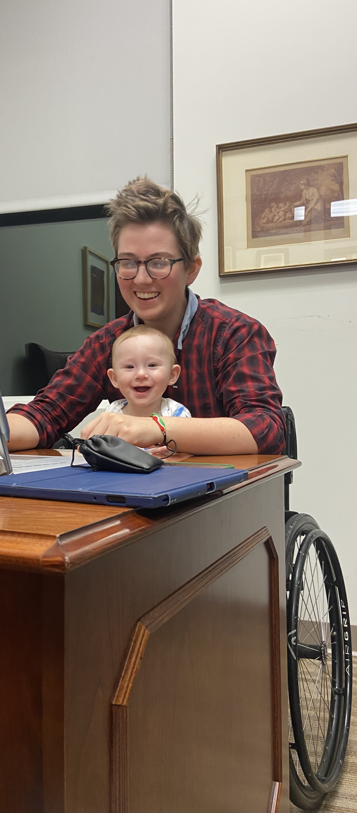

I am a postdoctoral fellow at the Rutgers Center for Cognitive Science.
I received my PhD in Philosophy from Rutgers University in 2024.
I work in social and feminist philosophy, philosophy of language, and epistemology.
A persistent question runs through my work: how do social dynamics shape
decision and interation? I purse this question across language, cognition, and
epistemology with a focus on gender, sexuality, disability, and collective
political action.
In language, I often study things like word choice and conversational
role power dynamics (e.g. how it matters what name or pronoun a speaker uses, as well
as the extent of speaker power to guide conversation). This work covers trans chosen names,
and the conversational dynamics required to take them up, the linguistic mechanisms involved
in misgendering, and when slurs and other expressive language becomes central to what a
conversation is about.
In epistemology, I look at how trust and deference impact the dynamics of group
decision. I argue that deference to the marginalized can build political solidarity. I look at
case studies including the AIDS crisis, and, in ongoing work, anti-Vietnam war action, and
disability organizing that lead to the passage of the Americans with Disabilities Act (ADA).
In cognition
In cognition, I run experiments on how social features shape people's representations of space
and quantity, and on how people coordinate perspectives in conversation.
Throughout, I use formal tools from logic, formal semantics and pragmatics, and Bayesian modelling
(in the PRIME lab with Pernille Hemmer) to make these questions precise and testable.